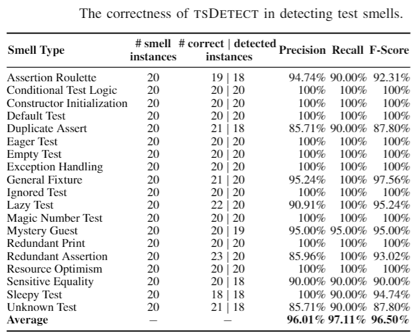

We conducted an empirical study to evaluate the effectiveness of tsDetect in correctly detecting test smells, in terms of precision and recall. Since there are no existing datasets containing information for all the supported test smells, we decided to construct our own validation set.
We start with randomly selecting test files (and their corresponding production files) from 656 open-source Android apps, hosted in F-Droid. We initially ensured that these apps were not duplicated or forked by verifying the uniqueness of the source URL and commit SHA. We then use the definition of test smells to identify them in the source files. Upon the identification of smells in a test file, we tag it along with its corresponding production file and the types of smells its exhibits. We keep this process of manually analyzing files and annotating them until we reach 20 infected instances per smell. This process resulted in a total of 65 annotated files.
Next, to ensure an unbiased annotation process, we performed another round of manual analysis by involving another set of reviewers to review the existing annotated set. We involved 39 graduate and undergraduate students from the Department of Software Engineering at Rochester Institute of Technology to manually review the same files for the existence of test smells. All the participants volunteered to participate in the experiment and were familiar with Java programming, unit testing and quality assurance. The experience of these participants with Java development ranged from 2 to 11 years, which includes exposure to developing unit tests. Prior to the review process, the participants were provided with a 75-minute tutorial on test smells along with reference materials. To reduce the effect of bias, participants were randomly grouped into groups of three, resulting in a total of 13 groups. Each group was provided with ten test files. The number of smell types exhibited by each file ranged from one to six. On average, each file contained three smell types. However, the participants were not informed of the type or count of smells contained in their set of test files.
To further protect from bias, we provided each smell type to at least two groups. Each group was asked to annotate each of the assigned files with the smell they think it contains. The participants were offered a period of three days to submit their survey results. When reviewing the survey results, we noticed two cases from the same group where there was no agreement about the existence of a Mystery Guest. There was no consensus between the group members on whether they should consider a service API call a guest in part because it is not mentioned by the provided definition. So, we decided to filter out these two cases, and we replaced them with two other manually identified mystery guests which were reviewed again by the group. This process generated a revised annotated set that we use as our oracle for testing the detection accuracy.
We next ran our tool on the same set of test files and then compared our results against the oracle. For each smell type, we constructed a confusion matrix and calculated the precision, recall, accuracy, and F-Score.
As shown in the table, tsDetect achieves a high level of correctness with F-Scores ranging from 87.8% to 100%. For the cases where the tool did not achieve 100%, we investigate the slight mismatch between the tool and the human decision. We had only one case where our tool did not detect a smell, and we had to refine our detection rule. The other cases were mainly related to the human interpretation of the smell definition, and that is why developers can update the default rules to better match what they consider to be problematic. The dataset used in this experiment is available here.
